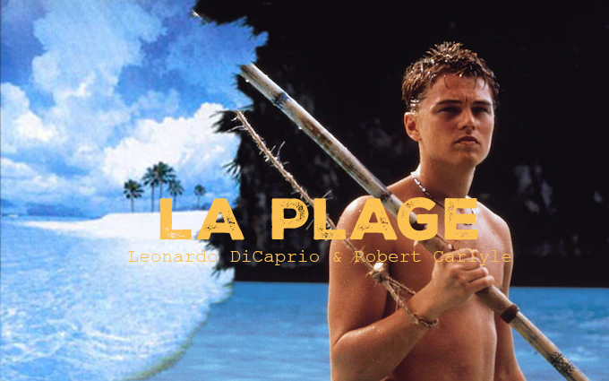

Plus sur L'Histoire
Koh Phi Phi, célèbre pour avoir servi de décor au film "La Plage" avec Leonardo DiCaprio, est un véritable paradis naturel qui séduit les voyageurs du monde entier. Dans le film, Richard, un jeune américain en quête d'aventure, découvre une île secrète où une communauté de voyageurs vit en autarcie, loin de la civilisation. Ce qui semblait être un paradis idyllique se transforme peu à peu en un lieu de tensions et de secrets. Inspiré par cette quête de liberté et d’évasion, Koh Phi Phi vous invite à vivre une expérience similaire, avec ses plages de sable blanc, ses eaux cristallines et ses paysages époustouflants. Bien que l'île soit désormais populaire, elle offre encore des recoins paisibles et des activités de plein air comme la plongée, le kayak, ou la randonnée, qui vous permettront de vivre une aventure authentique. En visitant Koh Phi Phi, vous ne découvrirez pas seulement un lieu magnifique, mais aussi un cadre propice à la réflexion sur l'illusion du "paradis" et la beauté brute de la nature, tout en profitant d’une ambiance unique où rencontres et explorations sont au rendez-vous. Si vous rêvez de découvrir un lieu emblématique du cinéma tout en vivant une expérience pleine d'émotions et de découvertes, Koh Phi Phi est une destination incontournable.